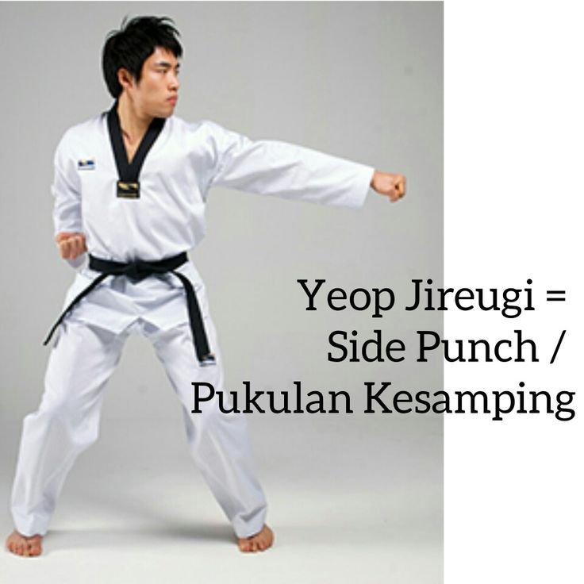

Kegiatan Taekwondo Indonesia

Video
Cara Melakukan Peregangan Berdiri Dasar
Browser Anda tidak mendukung video tag.
Mempelajari gerakan dasar Taekwondo (jigging, menusuk)
Browser Anda tidak mendukung video tag.
Taegeuk 1 Jang
Browser Anda tidak mendukung video tag.
Basic POOMSAE
Browser Anda tidak mendukung video tag.
One step Sparring
Browser Anda tidak mendukung video tag.
Taegeuk 2 Jang
Browser Anda tidak mendukung video tag.
Taegeuk 3 Jang
Browser Anda tidak mendukung video tag.
Taegeuk 4 Jang
Browser Anda tidak mendukung video tag.